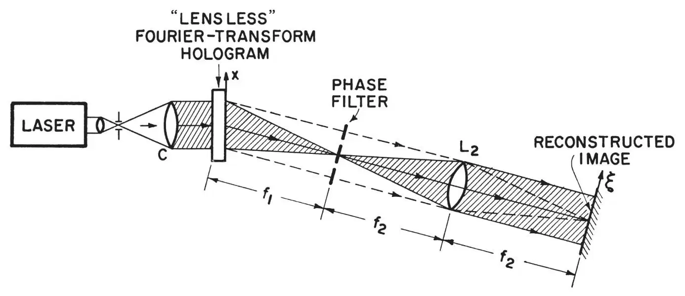
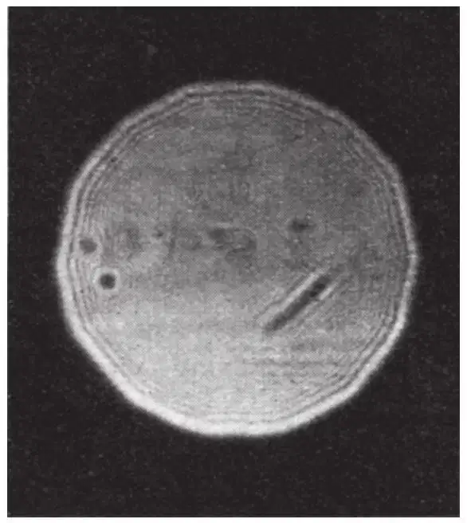
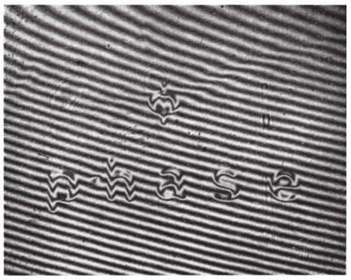
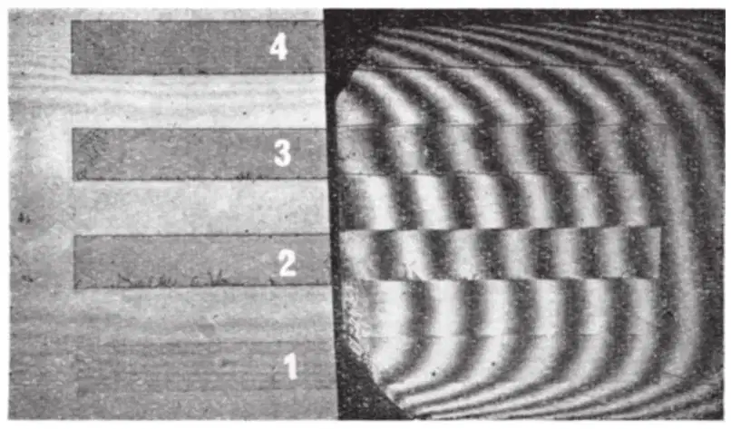
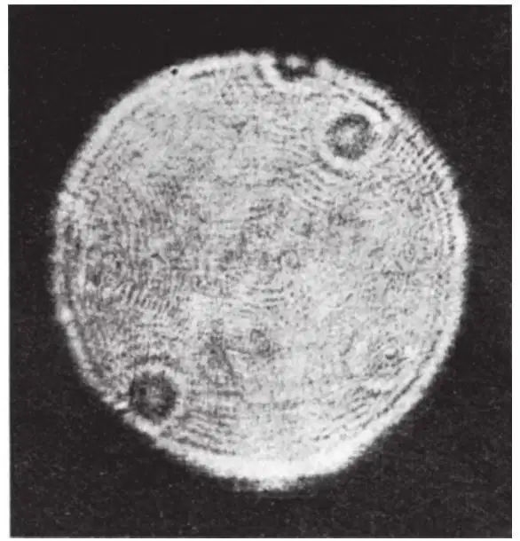
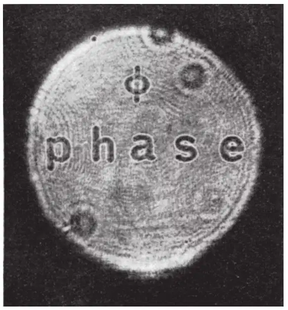
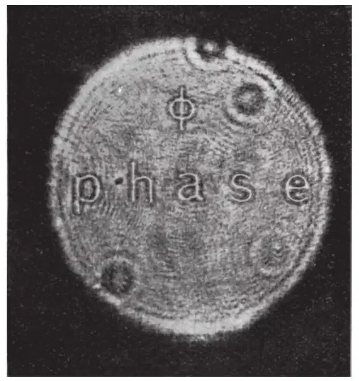
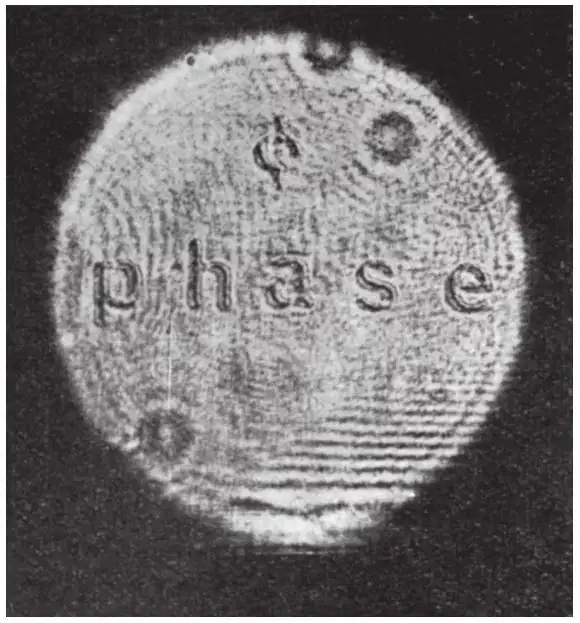
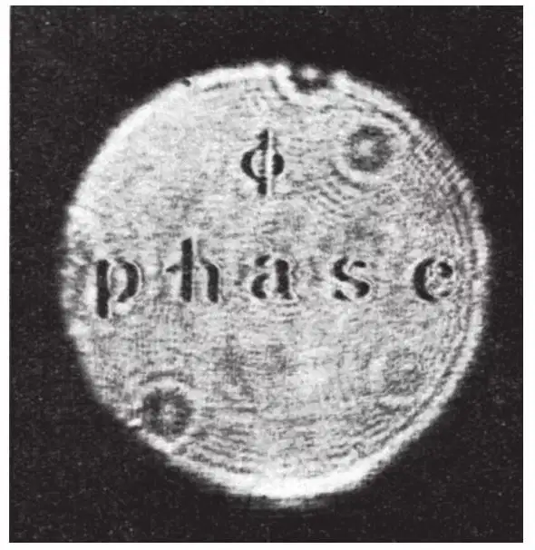
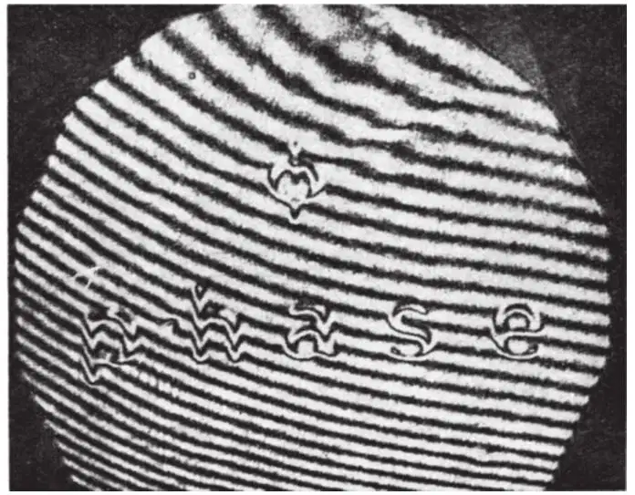

中文
中文D. Gabor et al.
Editor’s Note
In 1948, Hungarian physicist Dennis Gabor reported in Nature a kind of three-dimensional imaging process which he called holography. He developed the idea initially in connection with the optics of electron beams, although he later generalized it to light. Holography relies on the interaction of the phases of reflected rays, but as Gabor and his coworkers say here, that phase information might appear to be lost in photographic images which merely record brightness of the beams. They show, however, a way to reconstruct both the phases and the amplitudes of the beams using optical holography, and thus to obtain all the available information about the object from which the rays are scattered. 中文
THE principle of wave-front-reconstruction imaging, first described by one of us in 1948 (refs.1–3), has recently resulted in spectacular advances, notably in the form of three-dimensional “lensless” photography and imaging, with both macroscopic and microscopic objects3-8. Excellent images have been obtained in a number of variations of the basic method, notably when the objects used were “half-tone” intensity objects, or transparencies, rather than “phase” objects. 中文
“Phase” objects may be of a primary interest in a number of holographic applications, notably in microscopy, and in several other applications, where phase rather than amplitude variations in the light field may be predominantly characteristic of the physical phenomena under investigation, for example, in work with wind tunnels and in acoustical applications. 中文
As holograms are recorded on photographic emulsions which register only intensities, not phases, one might easily believe that a hologram is not a full substitute for a real object. Indeed, the total wave-front which issues from a hologram in the reconstruction cannot be the same as the original wave-front emitted by the object, because one half of the information is missing. In order to obtain the total information one requires two holograms, which are in sine-cosine relation to one another. Two such “complementary” or “quadrature” holograms have been used in the “total reconstruction microscope” by one of us9. Adding up the wave-fronts issuing from two such holograms, one obtains in the reconstruction the original wave-front, and nothing else, except a uniform background. 中文
However, somewhat paradoxically, the original wave-front is also contained in the modified wave-front diffracted in the reconstruction by a single hologram. The incompleteness shows itself in the fact that this wave-front is mixed up with an additional wave, which appears to issue from a “conjugate object”. But the two partial wave-fronts can be separated by various methods, the simplest of which is using a skew reference beam at an angle to the plate, in the taking of the hologram. The information-theoretical paradox that an incomplete record contains the full information in a retrievable form is explained by the fact that there is a loss of one half of the definition. This, however, is as good as unnoticeable in almost all present-day applications of holography. 中文
Consequently, since one of the two (or more) waves diffracted by the hologram in the reconstruction process contains information on both the amplitude and the phase distribution in the object, both the phase and the amplitude information may be extracted from the reconstructed wave-front, for example, by suitable “filtering” of the aerial reconstructed images, or diffraction patterns, before the final image is recorded on a photographic film. In essence, the image-forming wave-fronts reconstructed from holograms are indistinguishable from the wave-front which would be obtained from an ideal lens or mirror looking directly at the object, when it is possible to form an image in the ordinary “one-step” imaging, for example, in microscopy. It has therefore been clear to us for some time that we may display the phase in the holographically reconstructed images of “phase” objects, when necessary, with the aid of any one of the several well-known methods10,11 (for example, phase contrast, interferometry, Foucault or Schlieren methods) used to display the phase variations in the form of amplitude variations, as used in microscopy and other phase measuring applications in optics. 中文
Because of the great present interest in holography, and because some of our recent advances seem to indicate a good likelihood that high resolutions may indeed be attainable in microscopy at very short wave-lengths (for example, X-rays), it may be of interest to demonstrate that phase-preserving imaging and “phase-contrast” image reconstruction may indeed be readily achieved in holography, using single holograms. 中文
As one example of the “phase-preserving” reconstruction of the image of a phase object, we have used the arrangement shown in Fig. 1. The phase object used is shown (barely visible) in Fig. 2a, and an enlarged transmission two-beam interferogram of the object is shown in Fig. 2b. The phase object was formed by photographing the word “phase” and the letter “φ” on a Kodak 649F plate, and by bleaching the emulsion (using Kodak chromium intensifier as the bleacher). It is well known that photographic emulsions will shrink with the density of the exposure. (Typical emulsion shrinkage with exposure factors, 1, 2, 3, 4, is shown in Fig. 2c.) The phase object was recorded by projecting an image on to the plate deliberately slightly out of focus, in order to avoid steep gradients at the edges of the letters. (The amount of shrinkage shown in Fig. 2b was achieved in a 20-sec exposure, with a 75 W bulb, at f/11, in 1∶1 imaging in the enlarger, and suitable bleaching.) 中文

Fig. 1. Modified Fourier-transform holographic image-reconstruction arrangement, permitting “phase-contrast” detection and imaging of phase objects. The distance f1 is equal to the distance of the object, respectively point-reference, from the hologram in the “lensless” recording of the Fourier-transform hologram12,13; “Conventional” Fourier-transform reconstruction of the images from the Fourier-transform holograms is obtained in the absence of the “phase filter”. (The geometrical magnification obtained in Fourier-transform holographic imaging is equal to the ratio f2/f1. An additional magnification factor equal to λ2/λ1 is obtained, when the reconstructing wave-length λ2 exceeds the recording wave-length λ1. In this work, f1=415 mm, f2=600 mm, λ2=λ1=6,328 Å) 中文

Fig. 2a. Direct (not holographic) image of phase object used in this work, showing degree to which a “pure” phase object was obtained by suitable bleaching of a Kodak 649F emulsion (see text, and Fig. 2b). The object is the word “phase” and the letter “φ” (the word phase being20 mm long). The slight contrast detectable is due to some slight defocusing, and some residual absorption in the plate 中文

Fig. 2b. Two-beam single-pass interferogram (6,328 Å) of the phase object used in this work. The hologram of this phase object was recorded in the “lensless” Fourier-transform hologram recording arrangement according to ref. 12 中文

Fig. 2c. Two-beam single-pass interferogram (6,328 Å), illustrating the amount of emulsion shrinkage and corresponding phase variation achievable in a Kodak 649F emulsion with four different exposures (in ratios ×1, ×2, ×3, ×4), and suitable bleaching with Kodak chromium image intensifier, used to obtain almost pure “phase objects”, with minimum residual absorption 中文
The hologram of the phase object was recorded in the “lensless Fourier-transform” hologram recording arrangement, first described by one of us12,13, in which the spherical waves originating from the various object points are made to interfere with a “single” spherical reference wave, originating from a source “point” in the mean plane next to the object. A reference wave of a radius f1=415 mm was used in the recording. (We may note that the “lensless” recording of the hologram permits storage of the information about the phase distribution in the object without introducing any other optical elements between the object and the emulsion, thus avoiding any extraneous scattering, which might reduce the fidelity and sensitivity of the method.) 中文
The images reconstructed from the “lensless Fourier-transform” hologram are shown in Figs. 3, 4 and 5. Fig. 3 shows a Fourier transform reconstruction, without filtering, obtained by simply projecting a plane monochromatic (6,328 Å) wave through the hologram, and by recording one of the side-band images in the focal pane of a f2=600 mm lens. Unlike the reconstruction-imaging of intensity or amplitude objects, the reconstructed image of the phase object in Fig. 3 shows no amplitude contrast, because of the “pure” phase nature of the object. 中文

Fig. 3. Reconstructed image, obtained by Fourier-transform reconstruction in the arrangement of Fig. 1, without the use of any phase-contrast enhancement. (The “lensless” Fourier-transform recording of the hologram of the object was obtained according to ref. 12.) The image shown here is characterized by an almost complete absence of any amplitude contrast in the phase-portions of the image (the various interference effects are spurious, and are caused mainly by imperfectly clean reconstructing optics). It may be noted that excellent imaging is obtained under similar conditions when the original objects are amplitude or intensity objects12,13, rather than pure phase objects 中文

Fig. 4a. Reconstructed image of phase object, obtained with “phase-contrast” enhancement by defocusing (here towards the L2 lens of Fig. 1 by –f2/4, with f2=600 mm). The length of the word in the object was 20 mm (in the image, it is 30 mm, because of the f2/f1 magnification (see Fig. 1)) 中文

Fig. 4b. Reconstructed image of phase object, with “phase-contrast” enhancement, obtained by defocusing (here, out of focus, away from the lens L2 by + f1/4) 中文

Fig. 4c. Reconstructed image of phase object, with phase-contrast enhancement obtained by using a phase-contrast filter (the corner of one of the rectangular phase strips, shown inFig. 2c) in the arrangement of Fig. 1. (Here, the interference effects are spurious, and due to some imperfect cleanliness in the reconstruction optics) 中文

Fig. 4d. Reconstructed image of phase object, with phase-contrast enhancement, obtained with a Foucault knife-edge used in the phase-filter plane of Fig. 1 中文

Fig. 5. “Hologram of the hologram.” Two-beam single-pass interferogram (6,328 Å laser light) of the interference pattern between the reconstructed aerial image and a plane reference beam. Comparison of the image-interferogram shown here with the similarly obtained object-interferogram of Fig. 2b demonstrates that phase-distribution in the object is indeed preserved and completely reconstructed in Fourier-transform wavefront-reconstruction imaging, using a modified “phase-contrast” enhancing arrangement, such as that illustrated in Fig. 1. (We may note that phase preservation and phase-enhancing reconstruction apply to holograms recorded at one wave-length, and reconstructed in a second wave-length, for example, when λ1 is in the X-ray domain and λ2 in the visible-light laser domain) 中文
Figs. 4 and 5 show well-contrasted images of the phase object, obtained by a number of the well-known phase filtering or phase-contrast methods, in which the phase variations are made visible in the form of amplitude (that is, intensity) variations in the image. 中文
Figs. 4a and b show the reconstructed images, obtained by a “defocusing” phase-contrast enhancement, in a Fourier-transform reconstruction arrangement, as in the sharply focused Fig. 3, but now by recording the images together slightly (±1/4 f2 at f/24) out of focus, with respect to the in-focus image of Fig. 3. 中文
Fig. 4c shows an in-focus image, in which the phase-contrast enhancement was obtained in the filtering arrangement shown in Fig. 1, with the help of the corner of a phase-contrast filter (also recorded photographically, and bleached, similarly to the object recording already described here). 中文
Fig. 4d shows an in-focus image, with “phase-contrast” enhancement obtained in the filtering arrangement of Fig. 1, with the help of a Foucault knife-edge filter (at right angles to the word “phase”). 中文
Fig. 5 shows a two-beam interferogram of the reconstructed aerial image, formed by interference of the aerial image with a plane wave (in a suitable beam-splitting arrangement): by comparing the interferogram of the phase object (Fig. 2b), the degree of phase preservation and of fidelity of “phase-preserving” reconstruction may be readily assessed. 中文
It is clear from a comparison of the images and interferogram of the image, of Fig. 4 and of Fig. 5, with the phase object and object-interferogram of Fig. 2, that the phase-distribution in the phase object was not only retrievably recorded in the hologram, but also that the phase in the image of the phase object can be readily displayed as an amplitude (respectively intensity) in the reconstructed image, with the aid of phase-contrast or other image-filtering methods, including interferometry of various types. We may note that there is some indication that holograms of phase objects, recorded with a 1/1 ratio of reference/diffracted field intensity (rather than the about 5/1 used here), appear to display some noticeable “phase-contrast” enhancement simply in the focus of the “conventional” Fourier-transform reconstruction arrangement. 中文
We thank R. C. Restrick for his advice. This work was supported in part by the U.S. National Science Foundation and the U.S. Office of Naval Research. 中文
(208, 1159-1162; 1965)
D. Gabor: F.R.S., Imperial College of Science and Technology, London.
G. W. Stroke, D. Brumm, A. Funkhouser and A. Labeyrid: University of Michigan, Ann Arbor, Michigan.
References:
1. Gabor, D., Nature, 161, 777 (1948).
2. Gabor, D., Proc. Roy. Soc., A, 197, 475 (1949).
3. Gabor, D., Proc. Phys. Soc., B, 244 (1951).
4. Leith, E. N., and Upatnieks, J., J. Opt. Soc. Amer., 53, 1377 (1963).
5. Leith, E. N., and Upatnieks, J., J. Opt. Soc. Amer., 54, 1295 (1964).
6. Leith, E. N., Upatnieks, J., and Haines, K. A., J. Opt. Soc. Amer., 55, 981 (1965).
7. Stroke, G. W., Optics of Coherent and Non-Coherent Electromagnetic Radiations (Univ. of Michigan, first ed., May 1964; second ed., March 1965).
8. Stroke, G. W., and Falconer, D. G., Phys. Letters, 13, 306 (1964); 15, 283 (1965); with Funkhouser, A., Pyhys. Letters, 16, 272 (1965); with Restrick, R., Funkhouser, A., and Brumm, D., Phys. Letters, 18, 274 (1965); App. Phys. Letters, 7,178 (1965).
9. Gabor, D., with Goss, W. P., British Patent No. 727, 893/1955, application date July 6, 1951.
10. Zernike, F., Physica, Haag, 1, 43 (1934); Physik. Z., 36, 848 (1935); Z. Techn. Physik., 16, 454 (1935).
11. Francon, M., Le Contraste de Phase en Optique et en Microscopie (Revue d’Oplique, Paris, 1950).
12. Stroke, G. W., App. Phys. Letters, 6, 201 (1965).
13. Stroke, G. W., Brumm, D., and Funkhouser, A., J. Opt. Soc. Amer., 55, 1327 (1965).